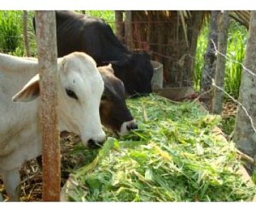

LA GANADERIA EN NUESTRA REGION
CAJAMARCA - PERU

La ganadería en Cajamarca
El sector agropecuario ha sido y será la actividad económica más importante de la región Cajamarca. El potencial económico se sustenta en la riqueza de sus valles interandinos y en la abundancia de recursos naturales desplegados en toda la región. EL gran problema se centró (hasta el año 2010) en la poca e ineficiente intervención de los gobiernos regionales y locales con proyectos de inversión pública en el sector ganadero y agrícola; apenas 300 mil soles por año es lo que invertía el Gobierno Regional.
Mejoramiento genetico

El MGA consiste en aplicar principios biológicos, económicos y matemáticos,con el fin de encontrar estrategias óptimas para aprovechar la variación genética existente en una especie de animales en particular para maximizar su mérito. Esto involucra tanto la variación genética entre los individuos de una raza, como la variación entre razas y cruzas. El mejoramiento genético animal nos permite orientar la adaptación de nuestras poblaciones animales a las condiciones de producción, logrando produccion.
Forraje

Podemos definir FORRAJE como todas aquellas plantas que se cultivan con el fin de alimentar a los animales. Puede ser consumida en pie o diferida, según sean las necesidades del proceso productivo.